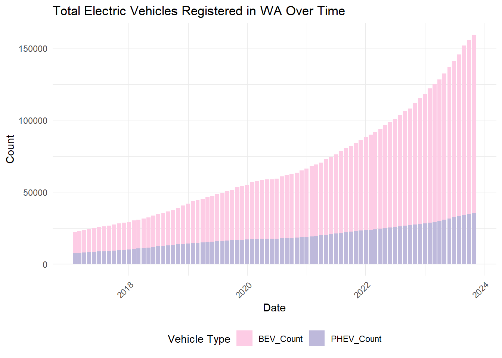
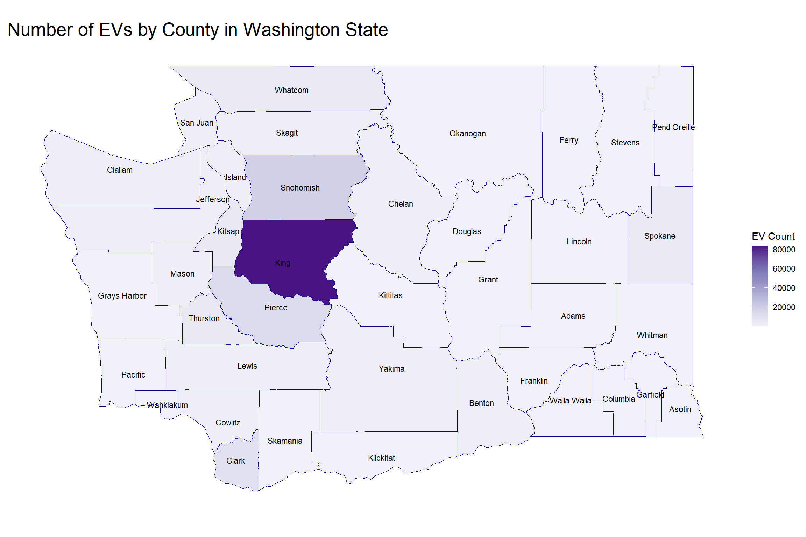
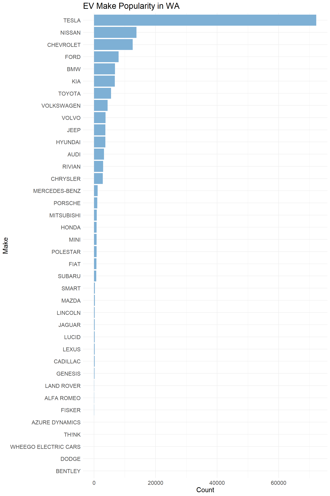
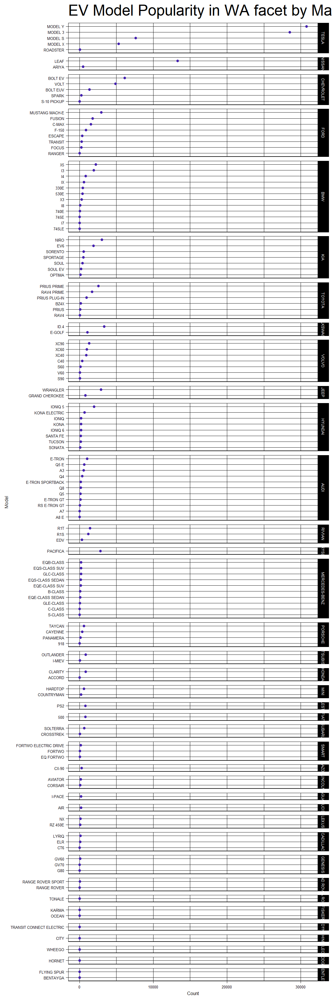
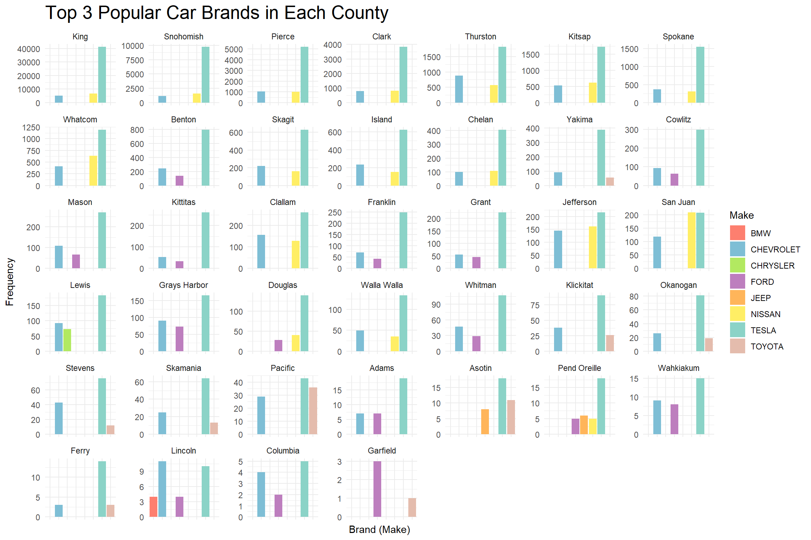
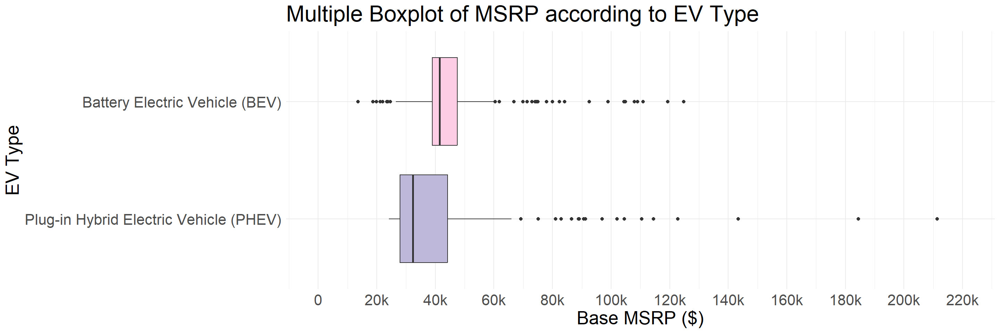
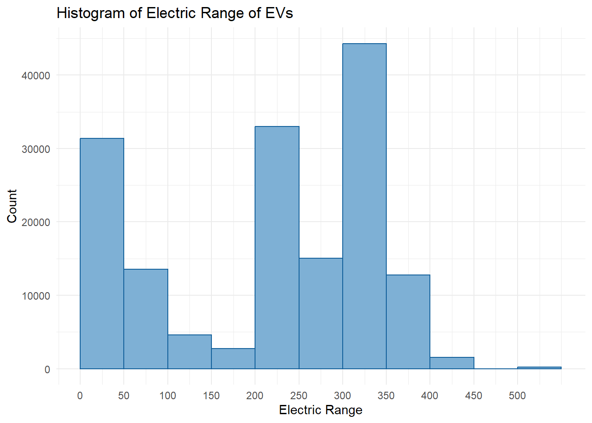
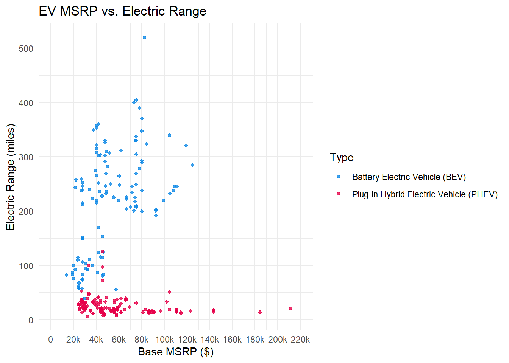

library(ggplot2)library(dplyr)hist <- hist %>%mutate(Date =as.Date(Date, format ="%B %d %Y"))hist_long <- hist %>%select(Date, PHEV_Count, BEV_Count) %>%gather(key ="VehicleType", value ="Count", -Date)ggplot(hist_long, aes(x = Date, y = Count, fill = VehicleType)) +geom_bar(stat ="identity", position ="stack") +scale_fill_manual(values =c("PHEV_Count"="#beb9db", "BEV_Count"="#fdcce5")) +labs(title ="Total Electric Vehicles Registered in WA Over Time",x ="Date",y ="Count",fill ="Vehicle Type") +theme_minimal() +theme(axis.text.x =element_text(angle =45, hjust =1),legend.position ="bottom")

Electric vehicle ownership surged remarkably from 22,425 units in January 2017 to 159,467 by October 2023, marking a more than seven fold increase. This trend is evident in the first graph, which illustrates an increasing growth rate each year. Additionally, both Plug-in Hybrid Electric Vehicles (PHEVs) and Battery Electric Vehicles (BEVs) have seen a rise in their numbers. However, the growth in BEV numbers has outpaced that of PHEVs.
Along with surge in overall EV numbers, there has been a notable shift in the composition of EV types. The proportion of BEVs has grown significantly, particularly in 2023. Over the last seven years, BEVs have not only increased in count but also consistently maintained a higher percentage compared to PHEVs.
3.1.2 How Many EV are there in Each County?
Code
library(sf)ev_count_per_county <- evpop %>%group_by(County) %>%summarise(EV_Count =n())counties <-st_read("/Users/wsqia/OneDrive/文档/547files/Columbia/courses/STAT5702 EDAV/Final Project/WA_County_Boundaries.dbf", quiet =TRUE)counties <- counties %>%select(JURISDIC_2, geometry)names(counties) <-c("County", "geometry")geo_data <-merge(counties, ev_count_per_county, by ='County', all.x =TRUE)ggplot(data = geo_data) +geom_sf(aes(fill = EV_Count), color =NA) +geom_sf(color ="darkblue", fill =NA, size =1) +geom_sf_text(aes(label = County), size =3, check_overlap =TRUE) +scale_fill_distiller(palette ="Purples", direction =1) +theme_minimal() +theme(axis.title.x =element_blank(),axis.title.y =element_blank(),axis.text.x =element_blank(),axis.text.y =element_blank(),panel.grid.major =element_blank(),panel.grid.minor =element_blank(),plot.title =element_text(size =20)) +labs(title ='Number of EVs by County in Washington State',fill ='EV Count')

Note: Due to the disproportionately high number of EVs in King County, presenting the counts for other counties on the same scale is challenging. To address this, a graph utilizing a logarithmic scale for the counts has been provided for clearer comparison.
Code
geo_data <- geo_data %>%mutate(EV_Count_log =log(EV_Count))ggplot(data = geo_data) +geom_sf(aes(fill = EV_Count_log), color =NA) +geom_sf(color ="darkblue", fill =NA, size =1) +geom_sf_text(aes(label = County), size =3, check_overlap =TRUE) +scale_fill_distiller(palette ="Purples", direction =1) +theme_minimal() +theme(axis.title.x =element_blank(), axis.title.y =element_blank(), axis.text.x =element_blank(), axis.text.y =element_blank(), panel.grid.major =element_blank(), panel.grid.minor =element_blank(),plot.title =element_text(size =20)) +labs(title ='Number of EVs by County in Washington State on Log Scale', fill ='log(EV Count)')
King County stands out for its high number of electric vehicles (EVs) compared to other counties in Washington. Neighboring Snohomish and Pierce Counties also demonstrate a significant number of EV adoptions, with Clark County following closely in terms of EV counts. Additionally, it is worth noting that Garfield County has a distinctly lower EV adoption, highlighting a sharp contrast within the state.
In terms of population, King County leads with 2,269,675 residents, while Pierce and Snohomish rank second and third with populations of 921,130 and 827,957, respectively. These counties, particularly King, Pierce, and Clark, have population densities exceeding 500 people per square mile. Snohomish County, with a density between 200 and 499.9 people per square mile, also exhibits a notable concentration of population. This pattern suggests a potential correlation between population density and the number of EV adoptions. However, further research is required to establish a definitive correlation or causative relationship between these factors.
3.2 Popular EV Make
3.2.1 What are the most popular electric vehicle makes in Washington State?
Code
Make_Count <- evp%>%group_by(Make) %>%summarise(Count =n()) %>%arrange(Count)Make_Count$Make <-factor(Make_Count$Make, levels = Make_Count$Make)Make_Count_BEV <- evp%>%filter(Type=="Battery Electric Vehicle (BEV)") %>%group_by(Make) %>%summarise(Count =n()) %>%arrange(Count)Make_Count_BEV$Make <-factor(Make_Count_BEV$Make, levels = Make_Count_BEV$Make)Make_Count_PHEV <- evp%>%filter(Type=="Plug-in Hybrid Electric Vehicle (PHEV)") %>%group_by(Make) %>%summarise(Count =n()) %>%arrange(Count)Make_Count_PHEV$Make <-factor(Make_Count_PHEV$Make, levels = Make_Count_PHEV$Make)ggplot(Make_Count,aes(x =Make, y = Count)) +geom_col(fill ="#7eb0d5", show.legend =FALSE) +coord_flip() +theme_minimal() +theme(text=element_text(size=15),element_line(size=0.5)) +labs(x ="Make", y ="Count", title ="EV Make Popularity in WA")

Code
ggplot(Make_Count_BEV,aes(x =Make, y = Count)) +geom_col(fill ="#fdcce5", show.legend =FALSE) +coord_flip() +theme_minimal() +theme(text=element_text(size=15),element_line(size=0.5)) +labs(x ="Make", y ="Count", title ="BEV Make Popularity in WA")
Code
ggplot(Make_Count_PHEV,aes(x =Make, y = Count)) +geom_col(fill ="#beb9db", show.legend =FALSE) +coord_flip() +theme_minimal() +theme(text=element_text(size=15),element_line(size=0.5)) +labs(x ="Make", y ="Count", title ="PHEV Make Popularity in WA")
There are 38 different electric vehicle makes in the market in WA, 28 of which produces Battery Electric Vehicle and 26 of which produces Plugin-in Hybrid Electric Vehicle, and 16 of the makes are in both markets.
Not surprisingly, Tesla as a company known by almost everyone in the world is the most popular electric vehicle make in Washington State. Remarkably, the number of Tesla vehicles is approximately 4 times that of Nissan, the second most popular electric vehicle make in WA. Chevrolet follows as the third place. We can tell that there aren’t any huge differences in count for makes other than from the champion to the runner up if we look at them from the most popular to the least popular.
Tesla produces only Battery Electric Vehicles so it makes sense that Tesla also predominates the BEV market. The second place and the third place are also consistent with the whole EV market and there’s a huge gap between number of Tesla vehicles and number of Nissan EVs. The three makes with minimal presence, Fisker, Th!nk, and Azure Dynamics, also composes the fourth to sixth from last place in the whole EV population.
As for Plugin-Hybrid Electric Vehicles, there’s no brand of predominant position. Toyota, Chevrolet, and BMW, the first to third most popular PHEV brand, have no significant difference in total number in WA, all approximately 5000. The three least popular make comes at the bottom places of the general EV population in WA as well.
In summary, Tesla is the obvious champion here regarding EV and BEV popularity in WA. Toyota is the winner when it comes to PHEV, and Chevrolet outperforms when it comes to participating in both BEV and PHEV market in WA.
3.2.2 What about models?
Code
Model_Count <- evp %>%group_by(Make, Model) %>%summarise(Count=n(), .groups="drop") %>%arrange(Make, desc(Count))Model_Count$Make <-factor(Model_Count$Make, levels = Make_Count$Make)Model_Count <- Model_Count %>%arrange(desc(Make))ggplot(Model_Count, aes(x = Count, y =reorder(Model, Count))) +geom_point(color="#4421af", size=1.2) +facet_grid(fct_rev(Make)~.,scale="free_y",space="free_y")+theme_linedraw() +theme(text=element_text(size=6),element_line(size=0.3))+labs(x ="Count", y ="Model", title ="EV Model Popularity in WA facet by Make")

Now that we know about popular makes, we might wonder what are some popular models in particular. The most and the second most popular model are from our winner make Tesla, respectively Model Y and Model 3. The third most popular model is Leaf by Nissan. It is pretty shocking that there are in total only 2 models by Nissan in WA EV population and yet Nissan is the second most popular make, with LEAF predominantly contributing to the popularity of the make and ARIYA having little influence. Chevrolet Bolt EV follows. These four models are the only models with count of more than 5000 in WA.
3.2.3 County level? Do people have the same preference?
Code
top_makes_by_county <- evpop %>%group_by(County, Make) %>%summarise(Count =n()) %>%arrange(desc(Count)) %>%group_by(County) %>%slice_max(Count, n =3) %>%ungroup()ggplot(top_makes_by_county, aes(x = Make, y = Count, fill = Make)) +geom_bar(stat ="identity") +scale_fill_manual(values =c("#fd7f6f", "#7ebed5", "#b2e961", "#bd7ebe", "#ffb55a", "#ffee65", "#beb9db", "#fdcce5")) +facet_wrap(~ County, scales ="free_y") +theme_minimal() +theme(axis.text.x =element_blank(),plot.title =element_text(size =20)) +labs(title ="Top 3 Popular Car Brands in Each County",x ="Brand (Make)",y ="Frequency")

Note: In the graphs for some counties, four brands are depicted. This occurs when there is an equal count for the third-ranking brand, resulting in a tie.
It is not surprising that Tesla dominants as the leading EV brand in nearly all counties. Also, Chevrolet consistently ranks within the top three brands in the majority of counties, reflecting its widespread popularity among both BEV and PHEV owners in Washington State, as illustrated in part 3.2.1. Intriguingly, despite Nissan being the second most favored EV brand statewide, it only features in the top three brands in about half of the counties, suggesting regional preferences that diverge from the overall state trend. Noticeably, Garfield County stands out with only four EVs registered, which is not enough to establish a trend.
3.3 Price
3.3.1 We can’t ignore the price! What is the distribution of EV base MSRP in Washington State?
Code
# one single entry of very high MSRP causes problem in histogram, thus topcoding# evp%>%# arrange(desc(MSRP)) %>%# select(MSRP)evp_msrp_tc <- evp %>%mutate(MSRP_tc =ifelse(MSRP >100000, 100001, MSRP))ggplot(evp_msrp_tc, aes(x = MSRP_tc)) +geom_histogram(binwidth =10000, boundary=10000, fill ="#7eb0d5",color="#115f9a",closed="right") +scale_x_continuous(breaks =seq(10000, 110000, by=10000),labels =c("10k","20k","30k","40k","50k","60k","70k","80k","90k","100k","inf")) +theme_minimal() +labs(x ="Base MSRP ($)", y ="Count", title ="EV MSRP Frenquency in WA")
More than 70,000 of the Electric Vehicles in Washington State has a Base MSRP ranging from $40,000 to $50,000, making it the most common price range. The second most common price range is $20,000 to $30,000, which has less than a half of count compared to that of the most common price range. Then we have $30,000 to $40,000 and $70,000 to $80,000, which each contains about 20,000 electric vehicles. Note that when price exceeds $50,000, count significantly drops. We can conclude that people lean more towards a more economical choice.
3.3.2 Is there any noticable difference in distribution of prices between PHEV and BEV?
Code
# since one extreme outlier makes the boxplot hard to read, we adjust y-axis limits(not x-axis because we do coord_flip)ggplot(evp, aes(x =reorder(Type,MSRP, median), y = MSRP)) +geom_boxplot(fill =c("#beb9db", "#fdcce5")) +coord_flip()+theme_minimal() +theme(text=element_text(size=20))+scale_y_continuous(breaks =seq(0, 220000, by=20000),labels =c("0","20k","40k","60k","80k","100k","120k","140k","160k","180k","200k","220k"),limits =c(0,220000)) +labs(x ="EV Type", y ="Base MSRP ($)", title ="Multiple Boxplot of MSRP according to EV Type")

There do exist a difference in price pattern between BEV and PHEV. In general, BEVs are more expensive than PHEVs, with respective median of around $41k and $32k. The interquartile range of PHEV is wider than that of BEV, but PHEV has more variability in price overall. There are more outliers for BEV base MSRP than for PHEV base MSRP, especially on the lower side as PHEV has no outliers on the lower side at all. In general, although BEVs are generally more expensive than PHEV, we can find the lowest prices on BEVs and the highest prices on PHEVs. Note that we set limits on the axis because of the existence of an extreme outlier. All of the vehicles except for one has Base MSRP less than $220k, and that one exotic car is Porsche 918 which has a Base MSRP of $845k.
3.4 Electric Range
3.4.1 How’s the Electric Range for EVs? Are they the same for BEVs and PHEVs?
Code
ggplot(evpop, aes(x = Range)) +geom_histogram(binwidth =50, boundary =0, fill ="#7eb0d5", color ="#115f9a", closed="right") +scale_x_continuous(breaks =seq(0, 500, by =50)) +theme_minimal() +labs(title ="Histogram of Electric Range of EVs",x ="Electric Range",y ="Count")

From the histogram above, it’s apparent that the electric range of EVs predominantly falls into two groupings. The first cluster is centered at approximately 50 miles, indicating a significant number of EVs with a lower electric range. The second, more dispersed cluster spans from 200 to 400 miles, suggesting a wide array of EVs offering mid to high electric range capabilities. Apart from these, there is an exceptional category exceeding 500 miles, which is an outlier.
This distribution suggests a trend toward consumer preference for EVs within these two distinct range categories. Notably, there are relatively few purchases of EVs with the highest range capabilities, which may be due to limiting factors such as cost or low supply due to current technological constraints.
Code
ggplot(evpop, aes(x =reorder(Type, Range, median), y = Range)) +geom_boxplot(fill =c("#beb9db", "#fdcce5")) +theme_minimal() +coord_flip() +labs(title ="Distribution of Electric Range for BEVs and PHEVs",x ="Vehicle Type",y ="Electric Range (miles)")
The boxplot analysis indicates that BEVs primarily constitute the second cluster in the histogram, with a wider range, reflecting higher variation in their electric range. The median range for BEVs is just under 300 miles, significantly surpassing that of PHEVs, which reflects their reliance solely on battery power. Notably, the BEV distribution includes outliers on both the lower and higher ends, pointing to exceptional models deviating from the typical range.
Conversely, PHEVs, which make up the first cluster in the histogram, display a much smaller range, indicative of a narrower spectrum of electric capabilities. With a median of approximately 25 miles, PHEVs generally offer a shorter electric range than BEVs, which aligns with their dual-energy design incorporating gasoline. However, it is quite surprising that half of the hybrid electric vehicles can BARELY drive from Manhattan to Long Beach, solely on its battery. Additionally, the presence of outliers suggests that a few PHEVs have much higher electric range than the majority.
3.5 Price vs. Electric Range
3.5.1 Do we get more Electric Range if we’re paying more for the EV?
Code
# When dealing with correlation of MSRP and EV Range, we drop duplicatesmsrp_range <- evp %>%select(Type, MSRP, Range) %>%distinct(MSRP, Range, .keep_all=TRUE)# we adjust limits of x-axis here to prevent that one extreme outlier# from making the graph hard to readggplot(msrp_range, aes(x = MSRP, y = Range, color=Type)) +geom_point(size=1.2,alpha=0.8) +theme_minimal() +scale_x_continuous(breaks =seq(0, 220000, by=20000),labels =c("0","20k","40k","60k","80k","100k","120k","140k","160k","180k","200k","220k"),limits =c(0,220000)) +labs(x ="Base MSRP ($)", y ="Electric Range (miles)", title ="EV MSRP vs. Electric Range") +scale_color_manual(values=c("#0d88e6","#e60049"))

The scatterplot of Base MSRP vs. Electric Range for electric vehicles suggest that there’s no clear correlation in the two variables, meaning that we do not get more electric range when we are spending more on an EV, and we observe that we actually get small electric range when we’re spending more than $130k since all the options in that price range are PHEV. On top of the price and electric range analysis in former parts, we can also see how each EV type performs on the both variable together. BEVs form a clear crowded cluster with electric range of 200 to 400 and base MSRP of $20k to $130k. PHEVs are crowded on the lower left side of the scatterplot and spans across the lower side. There are also some BEV points on the lower left side but they are generally seperated clearly with PHEV. Note that here we also set limits on the axis due to the Porsche 918 as in part 3.3.2.